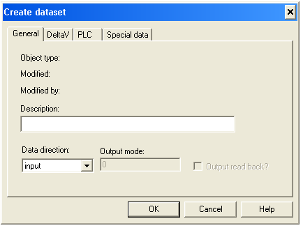
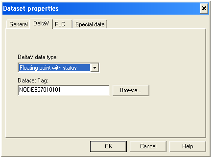

Each port can have as many as 16 datasets associated with it. These can all be configured for one device or you can have several devices with one or more datasets each.
To create a dataset, right-click the device and select New Dataset.

On the General tab of the Create dataset dialog:
Enter a description, if desired.
Select the Data direction.
If you selected Output, enter an Output mode:
0 indicates the entire dataset is written to the PLC if any dataset register changes.
1 indicates only the value that has changed is written.
If you want the output dataset to be read back into the Serial Card's input scan, select the Output read back check box.
The values that are read back update the current output values. If this box is not checked, no output read back is performed.
Open the DeltaV tab of the dialog.

On the DeltaV tab:
Select the DeltaV data type this dataset contains.
Enter or browse to a Dataset Tag.
A Dataset Tag, together with a specific register, is a Device Signal Tag (DST). You use DSTs to configure DeltaV control modules that read from or write to a serial device.
This concludes the common configuration tasks. The following sections contain the instructions for completing the configuration of the three different device types.